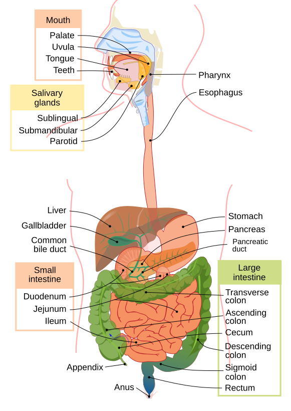
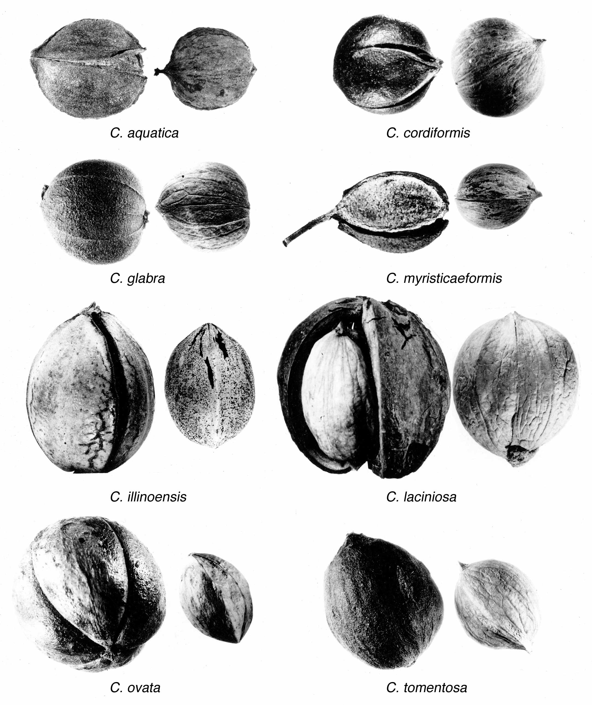

Carbohydrates
Sugars, starches, and fiber. Cells can use glucose from carbohydrate; fiber changes how material moves through the digestive system and feeds some gut microbes.
Life science · body systems · grades 5–9
Follow matter from a meal into the body, compare foods across a processing spectrum, and trace how human nutrition changed with fire, farming, preservation, industry, and global convenience.
Nutrition is not a morality score and no single food decides whether a person is “healthy.” It is the study of how organisms obtain and use matter and energy—and how context changes a food choice.
Images are evidence, not instructions. Look closely: what can you actually observe, and what would require more information?

Start with function, not “good food” versus “bad food.” Macronutrients are needed in larger amounts; micronutrients are needed in smaller amounts, but both can be biologically important.
Sugars, starches, and fiber. Cells can use glucose from carbohydrate; fiber changes how material moves through the digestive system and feeds some gut microbes.
Chains of amino acids used to build and repair structures, and to make enzymes, antibodies, and other working molecules.
Dense energy storage, cell membranes, signaling molecules, and help absorbing vitamins A, D, E, and K.
Micronutrients that help chemical reactions, bones, blood, nerves, immunity, and many other processes. “Small amount” does not mean “unimportant.”
Choose one or more examples from each MyPlate-style group. The model is a way to notice variety—not a required portion chart, a ranking of cultures, or a prescription.
Choose a card to begin. What does this model help you notice?
A Nutrition Facts label is a measurement system. Before comparing two foods, check the serving size and ask which variable matters for your investigation.
Percent Daily Value is a general label reference, not a personal target. Serving sizes and needs vary.
Which conclusion is best supported by this label?
A classmate says, “Protein gives me energy, so it is only an energy nutrient.” Which response is most accurate?
Sources & limits: Food-group language follows USDA MyPlate. Current U.S. federal guidance is published through the Dietary Guidelines for Americans; nutrient background can be checked against the NIH Office of Dietary Supplements fact sheets. This page uses simplified models: digestion, metabolism, health, and food access are more complex than the cards or bars suggest.
A meal is not just “calories.” It is a mixture of water, carbohydrates, proteins, fats, vitamins, minerals, fiber, pigments, flavor molecules, microbes, and sometimes additives or contaminants. The body responds to the whole pattern and to the person’s context.
Water is a major part of cells and blood. Minerals such as sodium and potassium help with fluid balance and nerve and muscle function. More is not always better.
Carbohydrate, fat, and protein can be broken down and used in metabolism. Their jobs overlap with building, signaling, storage, and repair.
Vitamins and minerals are present in smaller amounts but participate in many chemical reactions. Fortified foods can be useful sources; supplements are not automatically safer.
Fiber is carbohydrate that is not fully digested by human enzymes. The physical structure of a food can affect chewing, digestion, absorption, and fullness.
Plants contain pigments and other bioactive compounds. These are not a magic “superfood” score; effects depend on dose, food matrix, metabolism, and the overall diet.
Preservatives, emulsifiers, colors, flavors, and packaging can change shelf life and texture. Safety depends on the substance and exposure—not simply whether a word sounds chemical.
Processing can make food safer, last longer, easier to transport, or more affordable. The NOVA framework is one way researchers describe the purpose and intensity of processing; it does not itself grade every food’s healthfulness.
Examples: an apple, frozen berries, dry oats, plain beans, or pasteurized milk.
Research on ultra-processed foods often finds associations between higher intake and several health outcomes, but observational studies cannot make every food or person identical. Food access, culture, income, disability, time, and medical needs belong in the conversation.
There was never one single “human diet.” What people ate changed with climate, place, technology, trade, disease, work, culture, wealth, and power. Select a turning point to see what changed—and what stayed uncertain.
Vitamins are organic compounds the body needs in small amounts for specific chemical jobs. “Water-soluble” and “fat-soluble” describe how the body handles them; they are not rankings of importance. Select a family to focus the chart.
| Vitamin | Family & chemical job | Food examples | When intake is too low | Safety lens |
|---|---|---|---|---|
| Aretinoids / carotenoids | Fat-soluble. Vision, immune defenses, skin and lining cells, growth and development. | Liver, eggs, dairy; orange and dark-green plants provide carotenoids that the body can convert. | Impaired dark adaptation and, in severe deficiency, eye damage and increased infection risk. | High supplemental preformed vitamin A can harm the liver and developing fetus. Beta-carotene is not the same molecule as retinol. NIH fact sheet |
| B1 · thiaminthiamine | Water-soluble. Helps enzymes release energy from carbohydrate and supports nerve and cell function. | Whole and enriched grains, pork, fish, legumes, nuts and seeds. | Beriberi; severe deficiency can damage the nervous and cardiovascular systems. | The body stores little, so regular intake matters. Alcohol use disorder and malabsorption can increase risk. NIH fact sheet |
| B2 · riboflavin | Water-soluble. Part of coenzymes that help energy metabolism, growth, and cell maintenance. | Milk and yogurt, eggs, lean meats, almonds, mushrooms, enriched grains. | Cracks at the corners of the mouth, sore throat, skin problems, and anemia can occur. | Bright-yellow urine after a supplement reflects riboflavin’s color and is usually harmless; supplements still are not automatically needed. NIH fact sheet |
| B3 · niacinnicotinic acid / nicotinamide | Water-soluble. Builds NAD and NADP coenzymes for energy transfer, DNA repair, and cell signaling. | Poultry, fish, meat, peanuts, legumes, enriched breads and cereals. | Pellagra: dermatitis, diarrhea, and dementia in severe deficiency. | High-dose nicotinic acid can cause flushing and liver injury; nicotinamide behaves differently. NIH fact sheet |
| B5 · pantothenic acid | Water-soluble. Part of coenzyme A, central to making and breaking down fats and carbohydrates. | Widely distributed: meats, mushrooms, avocado, potatoes, whole grains, eggs, legumes. | Rare; possible signs include fatigue, irritability, numbness, and gastrointestinal symptoms. | Because it occurs in many foods, deficiency is uncommon. Very high supplemental doses can cause stomach upset or diarrhea. NIH fact sheet |
| B6 · pyridoxine group | Water-soluble. Amino-acid metabolism, neurotransmitter production, hemoglobin formation, and immune function. | Fish, poultry, chickpeas, potatoes, bananas, fortified cereals. | Anemia, dermatitis, confusion, weakened immunity, or neurologic symptoms may occur. | Long-term high-dose supplements can cause sensory neuropathy. More is not a general energy or mood shortcut. NIH fact sheet |
| B7 · biotin | Water-soluble. Cofactor for enzymes that make fatty acids and process carbohydrate and amino acids. | Eggs, salmon, meat, nuts, seeds, legumes, and some vegetables. | Rare; hair loss, skin rash, brittle nails, neurologic or mood symptoms can occur. | High-dose biotin can distort thyroid, hormone, and cardiac lab tests. Tell a clinician about supplements before testing. NIH fact sheet |
| B9 · folatefolic acid is a supplemental form | Water-soluble. DNA and RNA synthesis, cell division, red-blood-cell formation, and fetal neural-tube development. | Leafy greens, beans, peas, citrus, liver, and fortified grain products. | Megaloblastic anemia; inadequate folate during early pregnancy increases neural-tube-defect risk. | Folic acid fortification and supplements have specific public-health uses. High supplemental intake can mask some signs of B12 deficiency. NIH fact sheet |
| B12 · cobalamin | Water-soluble. DNA synthesis, red-blood-cell formation, and maintenance of the nervous system. | Naturally in meat, fish, eggs, and dairy; also in fortified foods and supplements. | Megaloblastic anemia, fatigue, numbness, balance problems, or cognitive and nerve changes. | Risk is higher with vegan diets without fortified foods or supplements, some medicines, and absorption disorders. Nerve damage can occur before anemia is obvious. NIH fact sheet |
| C · ascorbic acid | Water-soluble. Collagen production, wound healing, antioxidant chemistry, immune function, and improved absorption of plant iron. | Citrus, peppers, berries, tomatoes, broccoli, cabbage, and potatoes. | Scurvy: fatigue, bleeding gums, poor wound healing, and connective-tissue problems. | Very high supplemental doses can cause gastrointestinal distress and may increase kidney-stone risk in some people. NIH fact sheet |
| D · calciferols | Fat-soluble hormone-like vitamin. Helps regulate calcium and phosphate for bones, muscles, nerves, and immune function. | Sunlight-driven skin synthesis, fatty fish, egg yolks, fortified milk or plant beverages, and some mushrooms. | Rickets in children and osteomalacia or weak bones in adults; risk depends on age, exposure, skin, latitude, and health. | Excess usually comes from supplements, not sunlight, and can cause high blood calcium and kidney problems. NIH fact sheet |
| E · tocopherols / tocotrienols | Fat-soluble antioxidant family that helps protect cell membranes and supports immune function and cell signaling. | Nuts, seeds, vegetable oils, wheat germ, spinach, and other greens. | Rare; nerve and muscle problems, vision changes, or weakened immunity can occur, especially with fat-malabsorption disorders. | High-dose supplements may increase bleeding risk, especially with anticoagulant medicines. NIH fact sheet |
| K · phylloquinone / menaquinones | Fat-soluble family. Activates proteins needed for blood clotting and bone metabolism. | Leafy greens, broccoli, cabbage, vegetable oils, and vitamin-K-producing gut microbes. | Easy bruising and bleeding; clinically important deficiency is uncommon in healthy adults. | Food vitamin K can interact with warfarin; consistency and medical guidance matter more than avoiding all greens. NIH fact sheet |
Why no B4, B8, B10, or B11? “B vitamin” was once used for many substances. Several numbered candidates were later shown not to be required human vitamins or were renamed; the recognized human set is B1, B2, B3, B5, B6, B7, B9, and B12. The chart uses “vitamin” in the human nutrition sense, not every vitamin-like molecule sold in supplements.
These additional public-domain photographs connect the vitamin chart, processing spectrum, and history timeline. For each one, separate what the camera records from what you would need a label, laboratory test, or historical source to know.

Evidence notes for this chapter: The history overview is a simplified synthesis of research on cooking, agriculture, domestication, fermentation, and food systems; it is not a claim that all humans once ate one diet. For processing and health, compare the 2024 umbrella review of observational evidence with its limitations, and read the review of dietary change across human history. A category such as “ultra-processed” can help researchers describe patterns, but it cannot replace clinical advice or account for every person’s access and circumstances.